Common Lisp the Language, 2nd Edition
The function format is very useful for producing nicely formatted text, producing good-looking messages, and so on. format can generate a string or output to a stream.
Formatted output is performed not only by the format function itself but by certain other functions that accept a control string ``the way format does.'' For example, error-signaling functions such as cerror accept format control strings.
[Function]
format destination control-string &rest arguments
format is used to produce formatted output. format outputs the characters of control-string, except that a tilde (~) introduces a directive. The character after the tilde, possibly preceded by prefix parameters and modifiers, specifies what kind of formatting is desired. Most directives use one or more elements of arguments to create their output; the typical directive puts the next element of arguments into the output, formatted in some special way. It is an error if no argument remains for a directive requiring an argument, but it is not an error if one or more arguments remain unprocessed by a directive.
The output is sent to destination. If destination is nil, a string is created that contains the output; this string is returned as the value of the call to format.

X3J13 voted in January 1989
(STREAM-ACCESS)
to specify that when the first argument
to format is nil, format creates a stream
of type string-stream in much the same manner as with-output-to-string.
(This stream may be visible to the user if, for example, the ~S
directive is used to print a defstruct structure that has a user-supplied
print function.)

In all other cases format returns nil, performing output to destination as a side effect. If destination is a stream, the output is sent to it. If destination is t, the output is sent to the stream that is the value of the variable *standard-output*. If destination is a string with a fill pointer, then in effect the output characters are added to the end of the string (as if by use of vector-push-extend).
The format function includes some extremely complicated and specialized features. It is not necessary to understand all or even most of its features to use format effectively. The beginner should skip over anything in the following documentation that is not immediately useful or clear. The more sophisticated features (such as conditionals and iteration) are there for the convenience of programs with especially complicated formatting requirements.
A format directive consists of a tilde (~), optional prefix parameters separated by commas, optional colon (:) and at-sign (@) modifiers, and a single character indicating what kind of directive this is. The alphabetic case of the directive character is ignored. The prefix parameters are generally integers, notated as optionally signed decimal numbers.
X3J13 voted in June 1987 (FORMAT-ATSIGN-COLON)
to specify that if both colon and at-sign modifiers are present, they may appear
in either order; thus ~:@R and ~@:R
mean the same thing. However, it is traditional to put the colon first, and all the
examples in this book put colons before at-signs.
Examples of control strings:
"~S" ;An ~S directive with no parameters or modifiers
"~3,-4:@s" ;An ~S directive with two parameters, 3 and -4,
; and both the colon and at-sign flags
"~,+4S" ;First prefix parameter is omitted and takes
; on its default value; the second parameter is 4
Sometimes a prefix parameter is used to specify a character, for instance the padding character in a right- or left-justifying operation. In this case a single quote (') followed by the desired character may be used as a prefix parameter, to mean the character object that is the character following the single quote. For example, you can use ~5,'0d to print an integer in decimal radix in five columns with leading zeros, or ~5,'*d to get leading asterisks.
In place of a prefix parameter to a directive, you can put the letter V (or v), which takes an argument from arguments for use as a parameter to the directive. Normally this should be an integer or character object, as appropriate. This feature allows variable-width fields and the like. If the argument used by a V parameter is nil, the effect is as if the parameter had been omitted. You may also use the character # in place of a parameter; it represents the number of arguments remaining to be processed.
It is an error to give a format directive more parameters than it is described here as accepting. It is also an error to give colon or at-sign modifiers to a directive in a combination not specifically described here as being meaningful.
X3J13 voted in January 1989
(FORMAT-PRETTY-PRINT)
to clarify the interaction between format
and the various printer control variables (those named *print-xxx*).
This is important because many format operations are defined, directly
or indirectly, in terms of prin1 or princ, which are affected
by the printer control variables. The general rule is that format
does not bind any of the standard printer control variables except as
specified in the individual descriptions of directives. An implementation
may not bind any standard printer control variable not specified in the
description of a format directive, nor may an implementation fail
to bind any standard printer control variables that is specified to be bound
by such a description. (See these
descriptions for specific changes voted by X3J13.)
One consequence of this change is that the user is guaranteed to be able
to use the format ~A and ~S directives
to do pretty printing, under control of the *print-pretty* variable.
Implementations have differed on this point in their interpretations of
the first edition. The new ~W directive may be more appropriate
than either ~A and ~S for some purposes,
whether for pretty printing or ordinary printing.
See section 27.4 for a discussion of
~W and other new format directives related to pretty printing.
Here are some relatively simple examples to give you the general flavor of how format is used.
(format nil "foo") => "foo"
(setq x 5)
(format nil "The answer is ~D." x) => "The answer is 5."
(format nil "The answer is ~3D." x) => "The answer is 5."
(format nil "The answer is ~3,'0D." x) => "The answer is 005."
(format nil "The answer is ~:D." (expt 47 x))
=> "The answer is 229,345,007."
(setq y "elephant")
(format nil "Look at the ~A!" y) => "Look at the elephant!"
(format nil "Type ~:C to ~A."
(set-char-bit #\D :control t)
"delete all your files")
=> "Type Control-D to delete all your files."
(setq n 3)
(format nil "~D item~:P found." n) => "3 items found."
(format nil "~R dog~:[s are~; is~] here." n (= n 1))
=> "three dogs are here."
(format nil "~R dog~:*~[s are~; is~:;s are~] here." n)
=> "three dogs are here."
(format nil "Here ~[are~;is~:;are~] ~:*~R pupp~:@P." n)
=> "Here are three puppies."
In the descriptions of the directives that follow, the term arg in general refers to the next item of the set of arguments to be processed. The word or phrase at the beginning of each description is a mnemonic (not necessarily an accurate one) for the directive.
~mincolA inserts spaces on the right, if necessary, to make the width at least mincol columns. The @ modifier causes the spaces to be inserted on the left rather than the right.
~mincol,colinc,minpad,padcharA is the full form of ~A, which allows elaborate control of the padding. The string is padded on the right (or on the left if the @ modifier is used) with at least minpad copies of padchar; padding characters are then inserted colinc characters at a time until the total width is at least mincol. The defaults are 0 for mincol and minpad, 1 for colinc, and the space character for padchar.
X3J13 voted in January 1989
(FORMAT-PRETTY-PRINT)
to specify that format binds *print-escape*
to nil during the processing of the ~A directive.
X3J13 voted in January 1989
(FORMAT-PRETTY-PRINT)
to specify that format binds *print-escape*
to t during the processing of the ~S directive.
~mincolD uses a column width of mincol; spaces are inserted on the left if the number requires fewer than mincol columns for its digits and sign. If the number doesn't fit in mincol columns, additional columns are used as needed.
~mincol,padcharD uses padchar as the pad character instead of space.
If arg is not an integer, it is printed in ~A format and decimal base.
X3J13 voted in January 1989
(FORMAT-PRETTY-PRINT)
to specify that format binds *print-escape*
to nil, *print-radix* to nil, and *print-base* to 10
during processing of ~D.
The @ modifier causes the number's sign to be printed always; the default is to print it only if the number is negative. The : modifier causes commas to be printed between groups of three digits; the third prefix parameter may be used to change the character used as the comma. Thus the most general form of ~D is ~mincol,padchar,commacharD.
X3J13 voted in March 1988
(FORMAT-COMMA-INTERVAL)
to add a fourth parameter, the commainterval.
This must be an integer; if it is not provided,
it defaults to 3. This parameter controls the number of digits in each
group separated by the commachar.
By extension, each of the ~B, ~O, and ~X directives accepts a commainterval as a fourth parameter, and the ~R directive accepts a commainterval as its fifth parameter. Examples:
(format nil "~,,' ,4B" #xFACE) => "1111 1010 1100 1110" (format nil "~,,' ,4B" #x1CE) => "1 1100 1110" (format nil "~19,,' ,4B" #xFACE) => "1111 1010 1100 1110" (format nil "~19,,' ,4B" #x1CE) => "0000 0001 1100 1110"
This is one of those little improvements that probably don't matter much
but aren't hard to implement either. It was pretty silly having the number 3 wired
into the definition of comma separation when it is just as easy to make it
a parameter.
X3J13 voted in January 1989
(FORMAT-PRETTY-PRINT)
to specify that format binds *print-escape*
to nil, *print-radix* to nil, and *print-base* to 2
during processing of ~B.
X3J13 voted in January 1989
(FORMAT-PRETTY-PRINT)
to specify that format binds *print-escape*
to nil, *print-radix* to nil, and *print-base* to 8
during processing of ~O.
X3J13 voted in January 1989
(FORMAT-PRETTY-PRINT)
to specify that format binds *print-escape*
to nil, *print-radix* to nil, and *print-base* to 16
during processing of ~X.
X3J13 voted in January 1989
(FORMAT-PRETTY-PRINT)
to specify that format binds *print-escape*
to nil, *print-radix* to nil, and *print-base* to the value
of the first parameter
during the processing of the ~R directive with a parameter.
If no parameters are given to ~R, then an entirely different interpretation is given.
Notice of correction.
In the first edition, this sentence referred to ``arguments'' given to ~R.
The correct term is ``parameters.''
The argument should be an integer; suppose it is 4. Then ~R prints arg as a cardinal English number: four; ~:R prints arg as an ordinal English number: fourth; ~@R prints arg as a Roman numeral: IV; and ~:@R prints arg as an old Roman numeral: IIII.
X3J13 voted in January 1989
(FORMAT-PRETTY-PRINT)
to specify that format binds *print-base* to 10
during the processing of the ~R directive with no parameter.
The first edition did not specify how ~R and its variants should handle arguments that are very large or not positive. Actual practice varies, and X3J13 has not yet addressed the topic. Here is a sampling of current practice.
For ~@R and ~:@R, nearly all implementations produce Roman numerals only for integers in the range 1 to 3999, inclusive. Some implementations will produce old-style Roman numerals for integers in the range 1 to 4999, inclusive. All other integers are printed in decimal notation, as if ~D had been used.
For zero, most implementations print zero for ~R and zeroth for ~:R.
For ~R with a negative argument, most implementations simply print the word minus followed by its absolute value as a cardinal in English.
For ~:R with a negative argument, some implementations also print the word minus followed by its absolute value as an ordinal in English; other implementations print the absolute value followed by the word previous. Thus the argument -4 might produce minus fourth or fourth previous. Each has its charm, but one is not always a suitable substitute for the other; users should be careful.
There is standard English nomenclature for fairly large integers (up to 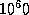, at least), based on appending the suffix -illion to Latin names of integers. Thus we have the names trillion, quadrillion, sextillion, septillion, and so on. For extremely large integers, one may express powers of ten in English. One implementation gives 1606938044258990275541962092341162602522202993782792835301376 (which is 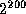, the result of (ash 1 200)) in this manner:
Another implementation prints it this way (note the use of plus):
(I have elided some of the text here to save space.)
Unfortunately, the meaning of this nomenclature differs between American English (in which k-illion means 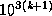, so one trillion is 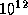) and British English (in which k-illion means 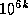, so one trillion is 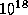).
To avoid both confusion and prolixity,
I recommend using decimal notation for all numbers above 999,999,999;
this is similar to the escape hatch used for Roman numerals.
(format nil "~D tr~:@P/~D win~:P" 7 1) => "7 tries/1 win" (format nil "~D tr~:@P/~D win~:P" 1 0) => "1 try/0 wins" (format nil "~D tr~:@P/~D win~:P" 1 3) => "1 try/3 wins"

~C prints the character in an implementation-dependent
abbreviated format. This format should be culturally compatible with the
host environment.

X3J13 voted in June 1987 (FORMAT-OP-C) to specify that
~C performs exactly the same action as write-char
if the character to be printed has zero for its bits attributes.
X3J13 voted in March 1989 (CHARACTER-PROPOSAL) to eliminate
the bits and font attributes, replacing them with the notion of
implementation-defined attributes. The net effect is that characters
whose implementation-defined attributes all have the ``standard''
values should be printed by ~C in the same way
that write-char would print them.
~:C spells out the names of the control bits and represents non-printing characters by their names: Control-Meta-F, Control-Return, Space. This is a ``pretty'' format for printing characters.
~:@C prints what ~:C would, and then if the character requires unusual shift keys on the keyboard to type it, this fact is mentioned: Control- (Top-F). This is the format for telling the user about a key he or she is expected to type, in prompts, for instance. The precise output may depend not only on the implementation but on the particular I/O devices in use.
~@C prints the character so that the Lisp reader can read it, using #\ syntax.
X3J13 voted in January 1989
(FORMAT-PRETTY-PRINT)
to specify that format binds *print-escape* to t
during the processing of the ~@C directive.
Other variants of the ~C directive do not bind any printer control variables.
The full form is ~w,d,k,overflowchar,padcharF. The parameter w is the width of the field to be printed; d is the number of digits to print after the decimal point; k is a scale factor that defaults to zero.
Exactly w characters will be output. First, leading copies of the character padchar (which defaults to a space) are printed, if necessary, to pad the field on the left. If the arg is negative, then a minus sign is printed; if the arg is not negative, then a plus sign is printed if and only if the @ modifier was specified. Then a sequence of digits, containing a single embedded decimal point, is printed; this represents the magnitude of the value of arg times 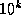, rounded to d fractional digits. (When rounding up and rounding down would produce printed values equidistant from the scaled value of arg, then the implementation is free to use either one. For example, printing the argument 6.375 using the format ~4,2F may correctly produce either 6.37 or 6.38.) Leading zeros are not permitted, except that a single zero digit is output before the decimal point if the printed value is less than 1, and this single zero digit is not output after all if w=d+1.
If it is impossible to print the value in the required format in a field of width w, then one of two actions is taken. If the parameter overflowchar is specified, then w copies of that parameter are printed instead of the scaled value of arg. If the overflowchar parameter is omitted, then the scaled value is printed using more than w characters, as many more as may be needed.
If the w parameter is omitted, then the field is of variable width. In effect, a value is chosen for w in such a way that no leading pad characters need to be printed and exactly d characters will follow the decimal point. For example, the directive ~,2F will print exactly two digits after the decimal point and as many as necessary before the decimal point.
If the parameter d is omitted, then there is no constraint on the number of digits to appear after the decimal point. A value is chosen for d in such a way that as many digits as possible may be printed subject to the width constraint imposed by the parameter w and the constraint that no trailing zero digits may appear in the fraction, except that if the fraction to be printed is zero, then a single zero digit should appear after the decimal point if permitted by the width constraint.
If both w and d are omitted, then the effect is to print the value using ordinary free-format output; prin1 uses this format for any number whose magnitude is either zero or between 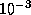 (inclusive) and 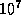 (exclusive).
If w is omitted, then if the magnitude of arg is so large (or, if d is also omitted, so small) that more than 100 digits would have to be printed, then an implementation is free, at its discretion, to print the number using exponential notation instead, as if by the directive ~E (with all parameters to ~E defaulted, not taking their values from the ~F directive).
If arg is a rational number, then it is coerced to be a single-float and then printed. (Alternatively, an implementation is permitted to process a rational number by any other method that has essentially the same behavior but avoids such hazards as loss of precision or overflow because of the coercion. However, note that if w and d are unspecified and the number has no exact decimal representation, for example 1/3, some precision cutoff must be chosen by the implementation: only a finite number of digits may be printed.)
If arg is a complex number or some non-numeric object, then it is printed using the format directive ~wD, thereby printing it in decimal radix and a minimum field width of w. (If it is desired to print each of the real part and imaginary part of a complex number using a ~F directive, then this must be done explicitly with two ~F directives and code to extract the two parts of the complex number.)
X3J13 voted in January 1989
(FORMAT-PRETTY-PRINT)
to specify that format binds *print-escape* to nil
during the processing of the ~F directive.
(defun foo (x)
(format nil "~6,2F|~6,2,1,'*F|~6,2,,'?F|~6F|~,2F|~F"
x x x x x x))
(foo 3.14159) => " 3.14| 31.42| 3.14|3.1416|3.14|3.14159"
(foo -3.14159) => " -3.14|-31.42| -3.14|-3.142|-3.14|-3.14159"
(foo 100.0) => "100.00|******|100.00| 100.0|100.00|100.0"
(foo 1234.0) => "1234.00|******|??????|1234.0|1234.00|1234.0"
(foo 0.006) => " 0.01| 0.06| 0.01| 0.006|0.01|0.006"
The presence or absence of the @ modifier corresponds to the effect of the Fortran SS or SP edit descriptor; nothing in Common Lisp corresponds to the Fortran S edit descriptor.
The scale factor specified by the parameter k corresponds to the scale factor k specified by the Fortran kP edit descriptor.
In Fortran, the leading zero that precedes the decimal point when the printed value is less than 1 is optional; in Common Lisp, the implementation is required to print that zero digit.
In Common Lisp, the w and d parameters are optional; in Fortran, they are required.
In Common Lisp, the pad character and overflow character are user-specifiable; in Fortran, they are always space and asterisk, respectively.
A Fortran implementation is prohibited from printing a representation of negative zero; Common Lisp permits the printing of such a representation when appropriate.
In MacLisp and Lisp Machine Lisp, the ~F format directive takes a single parameter: the number of digits to use in the printed representation. This incompatibility between Common Lisp and MacLisp was introduced for the sake of cultural compatibility with Fortran.
The full form is ~w,d,e,k,overflowchar,padchar,exponentcharE. The parameter w is the width of the field to be printed; d is the number of digits to print after the decimal point; e is the number of digits to use when printing the exponent; k is a scale factor that defaults to 1 (not zero).
Exactly w characters will be output. First, leading copies of the character padchar (which defaults to a space) are printed, if necessary, to pad the field on the left. If the arg is negative, then a minus sign is printed; if the arg is not negative, then a plus sign is printed if and only if the @ modifier was specified. Then a sequence of digits, containing a single embedded decimal point, is printed. The form of this sequence of digits depends on the scale factor k. If k is zero, then d digits are printed after the decimal point, and a single zero digit appears before the decimal point if the total field width will permit it. If k is positive, then it must be strictly less than d+2; k significant digits are printed before the decimal point, and d-k+1 digits are printed after the decimal point. If k is negative, then it must be strictly greater than -d; a single zero digit appears before the decimal point if the total field width will permit it, and after the decimal point are printed first -k zeros and then d+k significant digits. The printed fraction must be properly rounded. (When rounding up and rounding down would produce printed values equidistant from the scaled value of arg, then the implementation is free to use either one. For example, printing 637.5 using the format ~8,2E may correctly produce either 6.37E+02 or 6.38E+02.)
Following the digit sequence, the exponent is printed. First the character parameter exponentchar is printed; if this parameter is omitted, then the exponent marker that prin1 would use is printed, as determined from the type of the floating-point number and the current value of *read-default-float-format*. Next, either a plus sign or a minus sign is printed, followed by e digits representing the power of 10 by which the printed fraction must be multiplied to properly represent the rounded value of arg.
If it is impossible to print the value in the required format in a field of width w, possibly because k is too large or too small or because the exponent cannot be printed in e character positions, then one of two actions is taken. If the parameter overflowchar is specified, then w copies of that parameter are printed instead of the scaled value of arg. If the overflowchar parameter is omitted, then the scaled value is printed using more than w characters, as many more as may be needed; if the problem is that d is too small for the specified k or that e is too small, then a larger value is used for d or e as may be needed.
If the w parameter is omitted, then the field is of variable width. In effect a value is chosen for w in such a way that no leading pad characters need to be printed.
If the parameter d is omitted, then there is no constraint on the number of digits to appear. A value is chosen for d in such a way that as many digits as possible may be printed subject to the width constraint imposed by the parameter w, the constraint of the scale factor k, and the constraint that no trailing zero digits may appear in the fraction, except that if the fraction to be printed is zero, then a single zero digit should appear after the decimal point if the width constraint allows it.
If the parameter e is omitted, then the exponent is printed using the smallest number of digits necessary to represent its value.
If all of w, d, and e are omitted, then the effect is to print the value using ordinary free-format exponential-notation output; prin1 uses this format for any non-zero number whose magnitude is less than or greater than or equal to .
X3J13 voted in January 1989
(FORMAT-E-EXPONENT-SIGN)
to amend the previous paragraph as follows:
If all of w, d, and e are omitted, then the effect is to print the value using ordinary free-format exponential-notation output; prin1 uses a similar format for any non-zero number whose magnitude is less than or greater than or equal to . The only difference is that the ~E directive always prints a plus or minus sign before the exponent, while prin1 omits the plus sign if the exponent is non-negative.
(The amendment reconciles this paragraph with the specification several
paragraphs above that ~E always prints
a plus or minus sign before the exponent.)
If arg is a rational number, then it is coerced to be a single-float and then printed. (Alternatively, an implementation is permitted to process a rational number by any other method that has essentially the same behavior but avoids such hazards as loss of precision or overflow because of the coercion. However, note that if w and d are unspecified and the number has no exact decimal representation, for example 1/3, some precision cutoff must be chosen by the implementation: only a finite number of digits may be printed.)
If arg is a complex number or some non-numeric object, then it is printed using the format directive ~wD, thereby printing it in decimal radix and a minimum field width of w. (If it is desired to print each of the real part and imaginary part of a complex number using a ~E directive, then this must be done explicitly with two ~E directives and code to extract the two parts of the complex number.)
X3J13 voted in January 1989
(FORMAT-PRETTY-PRINT)
to specify that format binds *print-escape* to nil
during the processing of the ~E directive.
(defun foo (x)
(format nil
"~9,2,1,,'*E|~10,3,2,2,'?,,'$E|~9,3,2,-2,'%@E|~9,2E"
x x x x))
(foo 3.14159) => " 3.14E+0| 31.42$-01|+.003E+03| 3.14E+0"
(foo -3.14159) => " -3.14E+0|-31.42$-01|-.003E+03| -3.14E+0"
(foo 1100.0) => " 1.10E+3| 11.00$+02|+.001E+06| 1.10E+3"
(foo 1100.0L0) => " 1.10L+3| 11.00$+02|+.001L+06| 1.10L+3"
(foo 1.1E13) => "*********| 11.00$+12|+.001E+16| 1.10E+13"
(foo 1.1L120) => "*********|??????????|%%%%%%%%%|1.10L+120"
(foo 1.1L1200) => "*********|??????????|%%%%%%%%%|1.10L+1200"
Here is an example of the effects of varying the scale factor:
(dotimes (k 13)
(format t " %Scale factor 2D: | 13,6,2,VE|"
(- k 5) 3.14159)) ;Prints 13 lines
Scale factor -5: | 0.000003E+06|
Scale factor -4: | 0.000031E+05|
Scale factor -3: | 0.000314E+04|
Scale factor -2: | 0.003142E+03|
Scale factor -1: | 0.031416E+02|
Scale factor 0: | 0.314159E+01|
Scale factor 1: | 3.141590E+00|
Scale factor 2: | 31.41590E-01|
Scale factor 3: | 314.1590E-02|
Scale factor 4: | 3141.590E-03|
Scale factor 5: | 31415.90E-04|
Scale factor 6: | 314159.0E-05|
Scale factor 7: | 3141590.E-06|
The presence or absence of the @ modifier corresponds to the effect of the Fortran SS or SP edit descriptor; nothing in Common Lisp corresponds to the Fortran S edit descriptor.
The scale factor specified by the parameter k corresponds to the scale factor k specified by the Fortran kP edit descriptor; note, however, that the default value for k is 1 in Common Lisp, as opposed to the default value of zero in Fortran. (On the other hand, note that a scale factor of 1 is used for Fortran list-directed output, which is roughly equivalent to using ~E with the w, d, e, and overflowchar parameters omitted.)
In Common Lisp, the w and d parameters are optional; in Fortran, they are required.
In Fortran, omitting e causes the exponent to be printed using either two or three digits; if three digits are required, then the exponent marker is omitted. In Common Lisp, omitting e causes the exponent to be printed using as few digits as possible; the exponent marker is never omitted.
In Common Lisp, the pad character and overflow character are user-specifiable; in Fortran they are always space and asterisk, respectively.
A Fortran implementation is prohibited from printing a representation of negative zero; Common Lisp permits the printing of such a representation when appropriate.
In MacLisp and Lisp Machine Lisp, the ~E format directive takes a single parameter: the number of digits to use in the printed representation. This incompatibility between Common Lisp and MacLisp was introduced for the sake of cultural compatibility with Fortran.
The full form is ~w,d,e,k,overflowchar,padchar,exponentcharG. The format in which to print arg depends on the magnitude (absolute value) of the arg. Let n be an integer such that 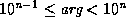. (If arg is zero, let n be 0.) Let ee equal e+2, or 4 if e is omitted. Let ww equal w-ee, or nil if w is omitted. If d is omitted, first let q be the number of digits needed to print arg with no loss of information and without leading or trailing zeros; then let d equal (max q (min n 7)). Let dd equal d-n.
If 0ddd, then arg is printed as if by the format directives
~ww,dd,,overflowchar,padcharF~ee@T
Note that the scale factor k is not passed to the ~F directive. For all other values of dd, arg is printed as if by the format directive
~w,d,e,k,overflowchar,padchar,exponentcharE
In either case, an @ modifier is specified to the ~F or ~E directive if and only if one was specified to the ~G directive.
X3J13 voted in January 1989
(FORMAT-PRETTY-PRINT)
to specify that format binds *print-escape* to nil
during the processing of the ~G directive.
Examples:
(defun foo (x)
(format nil
"~9,2,1,,'*G|~9,3,2,3,'?,,'$G|~9,3,2,0,'%G|~9,2G"
x x x))
(foo 0.0314159) => " 3.14E-2|314.2$-04|0.314E-01| 3.14E-2"
(foo 0.314159) => " 0.31 |0.314 |0.314 | 0.31 "
(foo 3.14159) => " 3.1 | 3.14 | 3.14 | 3.1 "
(foo 31.4159) => " 31. | 31.4 | 31.4 | 31. "
(foo 314.159) => " 3.14E+2| 314. | 314. | 3.14E+2"
(foo 3141.59) => " 3.14E+3|314.2$+01|0.314E+04| 3.14E+3"
(foo 3141.59L0) => " 3.14L+3|314.2$+01|0.314L+04| 3.14L+3"
(foo 3.14E12) => "*********|314.0$+10|0.314E+13| 3.14E+12"
(foo 3.14L120) => "*********|?????????|%%%%%%%%%|3.14L+120"
(foo 3.14L1200) => "*********|?????????|%%%%%%%%%|3.14L+1200"
Notice of correction.
In the first edition, the example for the value 3.14E12 contained two
typographical errors:
These have been corrected above.
The Common Lisp rules for deciding between the use of ~F and ~E are compatible with the rules used by Fortran but have been extended to cover the cases where w or d is omitted or where e is specified.
In MacLisp and Lisp Machine Lisp, the ~G format directive is equivalent to the Common Lisp ~@* directive. This incompatibility between Common Lisp and MacLisp was introduced for the sake of cultural compatibility with Fortran.
The full form is ~d,n,w,padchar$. The parameter d is the number of digits to print after the decimal point (default value 2); n is the minimum number of digits to print before the decimal point (default value 1); w is the minimum total width of the field to be printed (default value 0).
First padding and the sign are output. If the arg is negative, then a minus sign is printed; if the arg is not negative, then a plus sign is printed if and only if the @ modifier was specified. If the : modifier is used, the sign appears before any padding, and otherwise after the padding. If w is specified and the number of other characters to be output is less than w, then copies of padchar (which defaults to a space) are output to make the total field width equal w. Then n digits are printed for the integer part of arg, with leading zeros if necessary; then a decimal point; then d digits of fraction, properly rounded.
If the magnitude of arg is so large that more than m digits would have to be printed, where m is the larger of w and 100, then an implementation is free, at its discretion, to print the number using exponential notation instead, as if by the directive ~w,q,,,,padcharE, where w and padchar are present or omitted according to whether they were present or omitted in the ~$ directive, and where q=d+n-1, where d and n are the (possibly default) values given to the ~$ directive.
If arg is a rational number, then it is coerced to be a single-float and then printed. (Alternatively, an implementation is permitted to process a rational number by any other method that has essentially the same behavior but avoids such hazards as loss of precision or overflow because of the coercion.)
If arg is a complex number or some non-numeric object, then it is printed using the format directive ~wD, thereby printing it in decimal radix and a minimum field width of w. (If it is desired to print each of the real part and imaginary part of a complex number using a ~$ directive, then this must be done explicitly with two ~$ directives and code to extract the two parts of the complex number.)
X3J13 voted in January 1989
(FORMAT-PRETTY-PRINT)
to specify that format binds *print-escape* to nil
during the processing of the ~$ directive.
~n% outputs n newlines.
No arg is used. Simply putting a newline in the control string would work, but ~% is often used because it makes the control string look nicer in the middle of a Lisp program.
~n& calls fresh-line and then outputs n-1 newlines. ~0& does nothing.
(defun type-clash-error (fn nargs argnum right-type wrong-type)
(format *error-output*
"~&Function ~S requires its ~:[~:R~;~*~] ~
argument to be of type ~S,~%but it was called ~
with an argument of type ~S.~%"
fn (eql nargs 1) argnum right-type wrong-type))
(type-clash-error 'aref nil 2 'integer 'vector) prints:
Function AREF requires its second argument to be of type INTEGER,
but it was called with an argument of type VECTOR.
(type-clash-error 'car 1 1 'list 'short-float) prints:
Function CAR requires its argument to be of type LIST,
but it was called with an argument of type SHORT-FLOAT.
Note that in this example newlines appear in the output only as specified by the ~& and ~% directives; the actual newline characters in the control string are suppressed because each is preceded by a tilde.
Ideally, the current column position is determined by examination of the destination, whether a stream or string. (Although no user-level operation for determining the column position of a stream is defined by Common Lisp, such a facility may exist at the implementation level.) If for some reason the current absolute column position cannot be determined by direct inquiry, format may be able to deduce the current column position by noting that certain directives (such as ~%, or ~&, or ~A with the argument being a string containing a newline) cause the column position to be reset to zero, and counting the number of characters emitted since that point. If that fails, format may attempt a similar deduction on the riskier assumption that the destination was at column zero when format was invoked. If even this heuristic fails or is implementationally inconvenient, at worst the ~T operation will simply output two spaces. (All this implies that code that uses format is more likely to be portable if all format control strings that use the ~T directive either begin with ~% or ~& to force a newline or are designed to be used only when the destination is known from other considerations to be at column zero.)
~@T performs relative tabulation. ~colrel,colinc@T outputs colrel spaces and then outputs the smallest non-negative number of additional spaces necessary to move the cursor to a column that is a multiple of colinc. For example, the directive ~3,8@T outputs three spaces and then moves the cursor to a ``standard multiple-of-eight tab stop'' if not at one already. If the current output column cannot be determined, however, then colinc is ignored, and exactly colrel spaces are output.
X3J13 voted in June 1989 (PRETTY-PRINT-INTERFACE) to define ~:T
and ~:@T to perform tabulation relative to a point defined
by the pretty printing process (see section 27.4).
~:* ``ignores backwards''; that is, it backs up in the list of arguments so that the argument last processed will be processed again. ~n:* backs up n arguments.
When within a ~{ construct (see below), the ignoring (in either direction) is relative to the list of arguments being processed by the iteration.
~n@* is an ``absolute goto'' rather than a ``relative goto'': it goes to the nth arg, where 0 means the first one; n defaults to 0, so ~@* goes back to the first arg. Directives after a ~n@* will take arguments in sequence beginning with the one gone to. When within a ~{ construct, the ``goto'' is relative to the list of arguments being processed by the iteration.
(format nil "~? ~D" "<~A ~D>" '("Foo" 5) 7) => "<Foo 5> 7"
(format nil "~? ~D" "<~A ~D>" '("Foo" 5 14) 7) => "<Foo 5> 7"
Note that in the second example three arguments are supplied to the control string "<~A ~D>", but only two are processed and the third is therefore ignored.
With the @ modifier, only one arg is directly consumed. The arg must be a string; it is processed as part of the control string as if it had appeared in place of the ~@? construct, and any directives in the recursively processed control string may consume arguments of the control string containing the ~@? directive. Example:
(format nil "~@? ~D" "<~A ~D>" "Foo" 5 7) => "<Foo 5> 7" (format nil "~@? ~D" "<~A ~D>" "Foo" 5 14 7) => "<Foo 5> 14"
Here is a rather sophisticated example. The format function itself, as implemented at one time in Lisp Machine Lisp, used a routine internal to the format package called format-error to signal error messages; format-error in turn used error, which used format recursively. Now format-error took a string and arguments, just like format, but also printed the control string to format (which at this point was available in the global variable *ctl-string*) and a little arrow showing where in the processing of the control string the error occurred. The variable *ctl-index* pointed one character after the place of the error.
(defun format-error (string &rest args) ;Example
(error nil "~?~%~V@T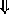~%~3@T "~A "~%"
string args (+ *ctl-index* 3) *ctl-string*))
(The character set used in the Lisp Machine Lisp implementation contains a down-arrow character , which is not a standard Common Lisp character.) This first processed the given string and arguments using ~?, then output a newline, tabbed a variable amount for printing the down-arrow, and printed the control string between double quotes (note the use of " to include double quotes within the control string). The effect was something like this:
(format t "The item is a ~[Foo~;Bar~;Loser~]." 'quux)
>>ERROR: The argument to the FORMAT "~[" command
must be a number.
"The item is a ~[Foo~;Bar~;Loser~]."
X3J13 voted in June 1989 (PRETTY-PRINT-INTERFACE) to introduce
certain format directives to support the user interface to the pretty
printer described in detail in chapter 27.
The format directives after this point are much more complicated than the foregoing; they constitute control structures that can perform case conversion, conditional selection, iteration, justification, and non-local exits. Used with restraint, they can perform powerful tasks. Used with abandon, they can produce completely unreadable and unmaintainable code.
The case-conversion, conditional, iteration, and justification constructs can contain other formatting constructs by bracketing them. These constructs must nest properly with respect to each other. For example, it is not legitimate to put the start of a case-conversion construct in each arm of a conditional and the end of the case-conversion construct outside the conditional:
(format nil "~:[abc~:@(def~;ghi~:@(jkl~]mno~)" x) ;Illegal!
One might expect this to produce either "abcDEFMNO" or "ghiJKLMNO", depending on whether x is false or true; but in fact the construction is illegal because the ~[...~;...~] and ~(...~) constructs are not properly nested.
The processing indirection caused by the ~? directive is also a kind of nesting for the purposes of this rule of proper nesting. It is not permitted to start a bracketing construct within a string processed under control of a ~? directive and end the construct at some point after the ~? construct in the string containing that construct, or vice versa. For example, this situation is illegal:
(format nil "~?ghi~)" "abc~@(def") ;Illegal!
One might expect it to produce "abcDEFGHI", but in fact the construction is illegal because the ~? and ~(...~) constructs are not properly nested.
(format nil "~@R ~(~@R~)" 14 14) => "XIV xiv" (defun f (n) (format nil "~@(~R~) error~:P detected." n)) (f 0) => "Zero errors detected." (f 1) => "One error detected." (f 23) => "Twenty-three errors detected."
"~[Siamese~;Manx~;Persian~] Cat"
The argth clause is selected, where the first clause is number 0. If a prefix parameter is given (as ~n[), then the parameter is used instead of an argument. (This is useful only if the parameter is specified by #, to dispatch on the number of arguments remaining to be processed.) If arg is out of range, then no clause is selected (and no error is signaled). After the selected alternative has been processed, the control string continues after the ~].
~[str0~;str1~;...~;strn~:;default~] has a default case. If the last ~; used to separate clauses is ~:; instead, then the last clause is an ``else'' clause that is performed if no other clause is selected. For example:
"~[Siamese~;Manx~;Persian~:;Alley~] Cat"
~:[false~;true~] selects the false control string if arg is nil, and selects the true control string otherwise.
~@[true~] tests the argument. If it is not nil, then the argument is not used up by the ~@[ command but remains as the next one to be processed, and the one clause true is processed. If the arg is nil, then the argument is used up, and the clause is not processed. The clause therefore should normally use exactly one argument, and may expect it to be non-nil. For example:
(setq *print-level* nil *print-length* 5)
(format nil "~@[ print level = ~D~]~@[ print length = ~D~]"
*print-level* *print-length*)
=> " print length = 5"
The combination of ~[ and # is useful, for example, for dealing with English conventions for printing lists:
(setq foo "Items:~#[ none~; ~S~; ~S and ~S~
~:;~@{~#[~; and~]
~S~^,~}~].")
(format nil foo)
=> "Items: none."
(format nil foo 'foo)
=> "Items: FOO."
(format nil foo 'foo 'bar)
=> "Items: FOO and BAR."
(format nil foo 'foo 'bar 'baz)
=> "Items: FOO, BAR, and BAZ."
(format nil foo 'foo 'bar 'baz 'quux)
=> "Items: FOO, BAR, BAZ, and QUUX."
Here are some simple examples:
(format nil
"The winners are:~{ ~S~}."
'(fred harry jill))
=> "The winners are: FRED HARRY JILL."
(format nil "Pairs:~{ <~S,~S>~}." '(a 1 b 2 c 3))
=> "Pairs: <A,1> <B,2> <C,3>."
~:{str~} is similar, but the argument should be a list of sublists. At each repetition step, one sublist is used as the set of arguments for processing str; on the next repetition, a new sublist is used, whether or not all of the last sublist had been processed. Example:
(format nil "Pairs:~:{ <~S,~S>~}."
'((a 1) (b 2) (c 3)))
=> "Pairs: <A,1> <B,2> <C,3>."
~@{str~} is similar to ~{str~}, but instead of using one argument that is a list, all the remaining arguments are used as the list of arguments for the iteration. Example:
(format nil "Pairs:~@{ <~S,~S>~}."
'a 1 'b 2 'c 3)
=> "Pairs: <A,1> <B,2> <C,3>."
If the iteration is terminated before all the remaining arguments are consumed, then any arguments not processed by the iteration remain to be processed by any directives following the iteration construct.
~:@{str~} combines the features of ~:{str~} and ~@{str~}. All the remaining arguments are used, and each one must be a list. On each iteration, the next argument is used as a list of arguments to str. Example:
(format nil "Pairs:~:@{ <~S,~S>~}."
'(a 1) '(b 2) '(c 3))
=> "Pairs: <A,1> <B,2> <C,3>."
Terminating the repetition construct with ~:} instead of ~} forces str to be processed at least once, even if the initial list of arguments is null (however, it will not override an explicit prefix parameter of zero).
If str is empty, then an argument is used as str. It must be a string and precede any arguments processed by the iteration. As an example, the following are equivalent:
(apply #'format stream string arguments)
(format stream "~1{~:}" string arguments)
This will use string as a formatting string. The ~1{ says it will be processed at most once, and the ~:} says it will be processed at least once. Therefore it is processed exactly once, using arguments as the arguments. This case may be handled more clearly by the ~? directive, but this general feature of ~{ is more powerful than ~?.
With no modifiers, the leftmost text segment is left-justified in the field, and the rightmost text segment right-justified; if there is only one text element, as a special case, it is right-justified. The : modifier causes spacing to be introduced before the first text segment; the @ modifier causes spacing to be added after the last. The minpad parameter (default 0) is the minimum number of padding characters to be output between each segment. The padding character is specified by padchar, which defaults to the space character. If the total width needed to satisfy these constraints is greater than mincol, then the width used is mincol+k*colinc for the smallest possible non-negative integer value k; colinc defaults to 1, and mincol defaults to 0.
(format nil "~10<foo~;bar~>") => "foo bar" (format nil "~10:<foo~;bar~>") => " foo bar" (format nil "~10:@<foo~;bar~>") => " foo bar " (format nil "~10<foobar~>") => " foobar" (format nil "~10:<foobar~>") => " foobar" (format nil "~10@<foobar~>") => "foobar " (format nil "~10:@<foobar~>") => " foobar "
Note that str may include format directives. All the clauses in str are processed in order; it is the resulting pieces of text that are justified.
The ~^ directive may be used to terminate processing of the clauses prematurely, in which case only the completely processed clauses are justified.
If the first clause of a ~< is terminated with ~:; instead of ~;, then it is used in a special way. All of the clauses are processed (subject to ~^, of course), but the first one is not used in performing the spacing and padding. When the padded result has been determined, then if it will fit on the current line of output, it is output, and the text for the first clause is discarded. If, however, the padded text will not fit on the current line, then the text segment for the first clause is output before the padded text. The first clause ought to contain a newline (such as a ~% directive). The first clause is always processed, and so any arguments it refers to will be used; the decision is whether to use the resulting segment of text, not whether to process the first clause. If the ~:; has a prefix parameter n, then the padded text must fit on the current line with n character positions to spare to avoid outputting the first clause's text. For example, the control string
"~%;; ~{~<~%;; ~1:; ~S~>~^,~}.~%"
can be used to print a list of items separated by commas without breaking items over line boundaries, beginning each line with ;; . The prefix parameter 1 in ~1:; accounts for the width of the comma that will follow the justified item if it is not the last element in the list, or the period if it is. If ~:; has a second prefix parameter, then it is used as the width of the line, thus overriding the natural line width of the output stream. To make the preceding example use a line width of 50, one would write
"~%;; ~{~<~%;; ~1,50:; ~S~>~^,~}.~%"
If the second argument is not specified, then format uses the line width of the output stream. If this cannot be determined (for example, when producing a string result), then format uses 72 as the line length.
X3J13 voted in June 1989 (PRETTY-PRINT-INTERFACE) to introduce
certain format directives to support the user interface to the pretty
printer. If ~:> is used to terminate a
~<... directive, the directive is equivalent to a call on
pprint-logical-block.
See section 27.4 for details.
(setq donestr "Done.~^ ~D warning~:P.~^ ~D error~:P.") (format nil donestr) => "Done." (format nil donestr 3) => "Done. 3 warnings." (format nil donestr 1 5) => "Done. 1 warning. 5 errors."
If a prefix parameter is given, then termination occurs if the parameter is zero. (Hence ~^ is equivalent to ~#^.) If two parameters are given, termination occurs if they are equal. If three parameters are given, termination occurs if the first is less than or equal to the second and the second is less than or equal to the third. Of course, this is useless if all the prefix parameters are constants; at least one of them should be a # or a V parameter.
If ~^ is used within a ~:{ construct, then it merely terminates the current iteration step (because in the standard case it tests for remaining arguments of the current step only); the next iteration step commences immediately. To terminate the entire iteration process, use ~:^.
X3J13 voted in March 1988
(FORMAT-COLON-UPARROW-SCOPE)
to clarify the behavior of ~:^ as follows.
It may be used only if the command it would terminate is ~:{
or ~:@{. The entire iteration process is terminated
if and only if the sublist that is supplying the arguments for the current iteration step
is the last sublist (in the case of terminating a ~:{ command)
or the last argument to that call to format (in the
case of terminating a ~:@{ command).
Note furthermore that while ~^ is equivalent
to ~#^ in all circumstances,
~:^ is not equivalent
to ~:#^ because the latter terminates the entire iteration
if and only if no arguments remain for the current iteration step
(as opposed to no arguments remaining for the entire iteration process).
Here are some examples of the differences in the behaviors of ~^, ~:^, and ~:#^.
(format nil
"~:{/~S~^ ...~}"
'((hot dog) (hamburger) (ice cream) (french fries)))
=> "/HOT .../HAMBURGER/ICE .../FRENCH ..."
For each sublist, `` ...'' appears after the first word unless there are no additional words.
(format nil
"~:{/~S~:^ ...~}"
'((hot dog) (hamburger) (ice cream) (french fries)))
=> "/HOT .../HAMBURGER .../ICE .../FRENCH"
For each sublist, `` ...'' always appears after the first word, unless it is the last sublist, in which case the entire iteration is terminated.
(format nil
"~:{/~S~:#^ ...~}"
'((hot dog) (hamburger) (ice cream) (french fries)))
=> "/HOT .../HAMBURGER"
For each sublist, `` ...'' appears after the first word, but if the sublist
has only one word then the entire iteration is terminated.
If ~^ appears within a control string being processed under the control of a ~? directive, but not within any ~{ or ~< construct within that string, then the string being processed will be terminated, thereby ending processing of the ~? directive. Processing then continues within the string containing the ~? directive at the point following that directive.
If ~^ appears within a ~[ or ~( construct, then all the commands up to the ~^ are properly selected or case-converted, the ~[ or ~( processing is terminated, and the outward search continues for a ~{ or ~< construct to be terminated. For example:
(setq tellstr "~@(~@[~R~]~^ ~A.~)") (format nil tellstr 23) => "Twenty-three." (format nil tellstr nil "losers") => "Losers." (format nil tellstr 23 "losers") => "Twenty-three losers."
Here are some examples of the use of ~^ within a ~< construct.
(format nil "~15<~S~;~^~S~;~^~S~>" 'foo)
=> " FOO"
(format nil "~15<~S~;~^~S~;~^~S~>" 'foo 'bar)
=> "FOO BAR"
(format nil "~15<~S~;~^~S~;~^~S~>" 'foo 'bar 'baz)
=> "FOO BAR BAZ"
X3J13 voted in June 1989 (PRETTY-PRINT-INTERFACE)
to introduce user-defined directives in the form of the
~/.../ directive.
See section 27.4 for details.
The hairiest format control string I have ever seen in shown in table 22-8. It started innocently enough as part of the simulator for Connection Machine Lisp [44,57]; the xapping data type, defined by defstruct, needed a :print-function option so that xappings would print properly. As this data type became more complicated, step by step, so did the format control string.
See the description of set-macro-character for a discussion of xappings and the defstruct definition. Assume that the predicate xectorp is true of a xapping if it is a xector, and that the predicate finite-part-is-xetp is true if every value in the range is the same as its corresponding index.
Here is a blow-by-blow description of the parts of this format string: